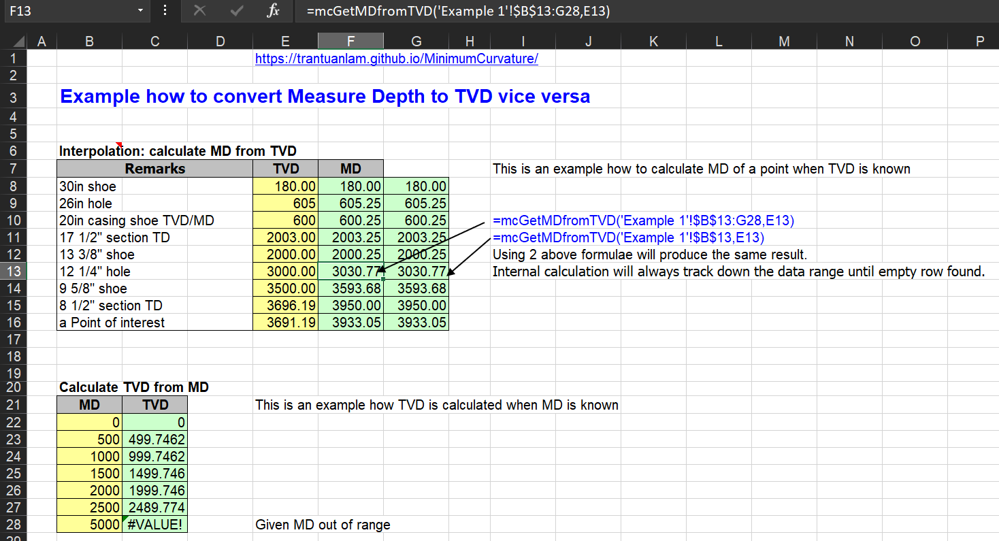

VBA code, written in an Excel .xlsm file, employs the Minimum Curvature method for survey calculations.
User-defined functions beginning with the "mc" prefix are designed for use in Excel spreadsheets.
Here are the functions included in the Excel file.
Minimum curvature method Functions
| Function | Description |
|---|---|
| mcVertial(I1, I2, A1, A2, DL) | Calculate the TVD |
| mcEast(I1, I2, A1, A2, DL) | Calculate the Easting |
| mcNorth(I1, I2, A1, A2, DL) | Calculate the Northing |
| DLS30Deg(I1, I2, DeltaAz, DL) | Calculate Dogleg for 30 length units |
| DLS100Deg(I1, I2, DeltaAz, DL) | Calculate Dogleg for 100 length units |
Where:
REFERENCE:
1. Dr. Bill Mitchell Advance Oilwell Drilling Engineering Handbook 10th Edition, 1st revision July 1995
2. Adam.T. Bourgoyne Jr, Keith.K. Millheim, Martin.E. Chenevert and F.S. Young Jr Applied Drilling Engineering 1991
3. Sawaryn, S.J. and Thorogood, J.L. 2005. A Compendium of Directional Calculations Based on the Minimum Curvature Method. SPE Drilling & Completion 20 (1): 24-36. SPE-84246-PA.https://doi.org/10.2118/84246-PA
4. Gilles Gabolde, Jean-Paul Nguyen Drilling Data Handbook Eighth Edition 2006
5. https://www.drillingformulas.com/minimum-curvature-method/
Interpolation Functions
These functions will scan the first column of SurveyRange downward until they encounter an empty row. They will then recalculate the survey data and interpolate the required parameters based on the given TVD or TD in the middle point.
SurveyRange requires a data range that is a survey table with a predefined format for calculation. The survey table must contain at least 6 columns: MD, Inclination, Azimuth, TVD, North, and East, so that the interpolation functions can operate correctly. The table's final row must be left empty to indicate the end of the chosen data array.
Even if only the top-left cell is provided, the functions will scan downward to obtain survey data from a wider range.
Functions take 2 parameters:
- First parameter SurveyRange is the survey table which starts from top left cell of the range.
- Second parameter (MD/TVD) is Measured Depth/True Vertical Depth which it needs to be mapped from.
Interpolation Functions from MD
| Function | Description |
|---|---|
| mcGetInclinationfromMD(SurveyRange, MD) | Calculate inclination from MD |
| mcGetAzimuthfromMD(SurveyRange, MD) | Calculate Azimuth from MD |
| mcGetTVDfromMD(SurveyRange, MD) | Calculate TVD from MD |
| mcGetEastfromMD(SurveyRange, MD) | Calculate Eastthing from MD |
| mcGetNorthfromMD(SurveyRange, MD) | Calculate Northhing from MD |
| mcGetDLS100fromMD(SurveyRange, MD) | Calculate DLS 100 from MD |
| mcGetDLS30fromMD(SurveyRange, MD) | Calculate DLS 30 from MD |
Interpolation Functions from TVD
| Function | Description |
|---|---|
| mcGetInclinationfromTVD(SurveyRange, aTVD) | Calculate inclination from TVD |
| mcGetAzimuthfromTVD(SurveyRange, aTVD) | Calculate Azimuth from TVD |
| mcGetMDfromTVD(SurveyRange, aTVD) | Calculate MD from TVD |
| mcGetEastfromTVD(SurveyRange, aTVD) | Calculate Eastthing from TVD |
| mcGetNorthfromTVD(SurveyRange, aTVD) | Calculate Northhing from TVD |
| mcGetDLS100fromTVD(SurveyRange, aTVD) | Calculate DLS 100 from TVD |
| mcGetDLS30fromTVD(SurveyRange, aTVD) | Calculate DLS 30 from TVD |
Other examples of using interpolation functions:
